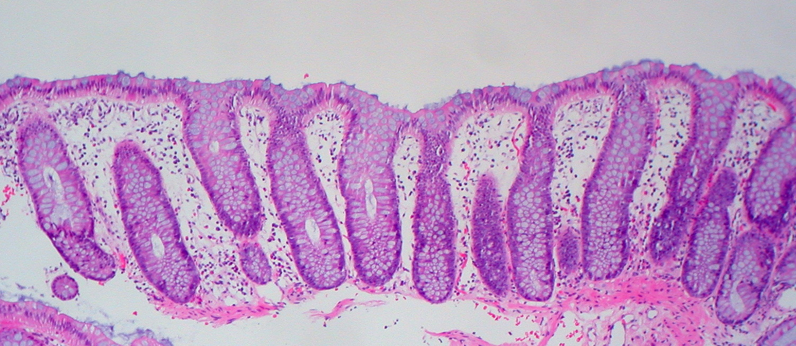
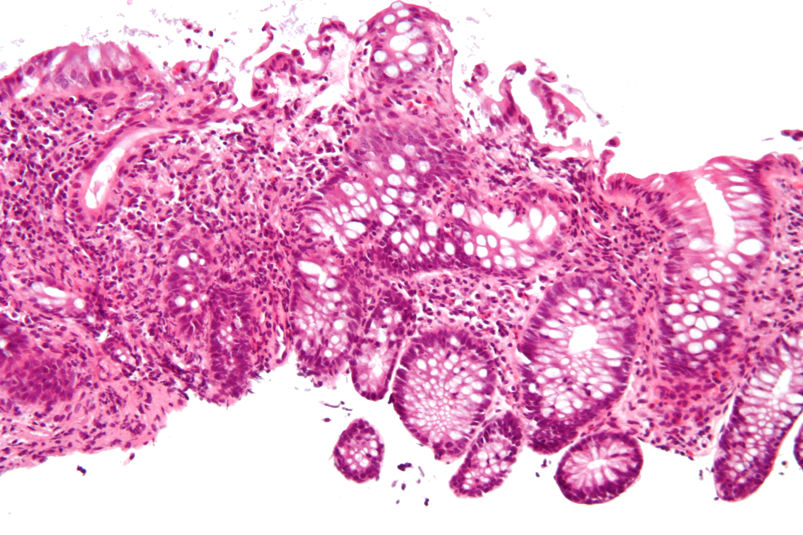
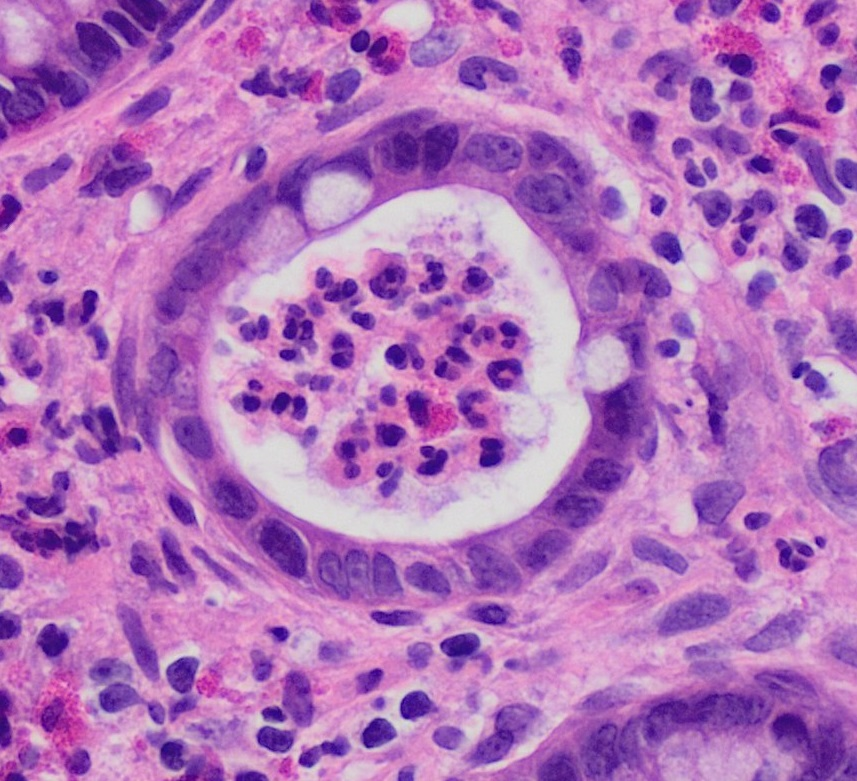
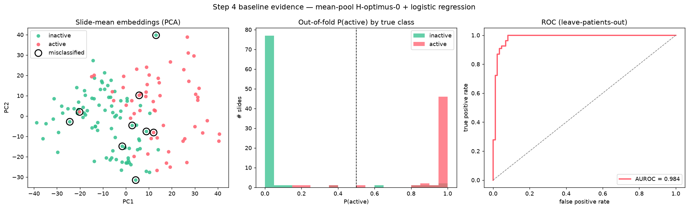
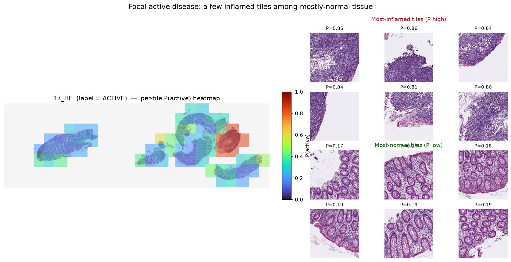
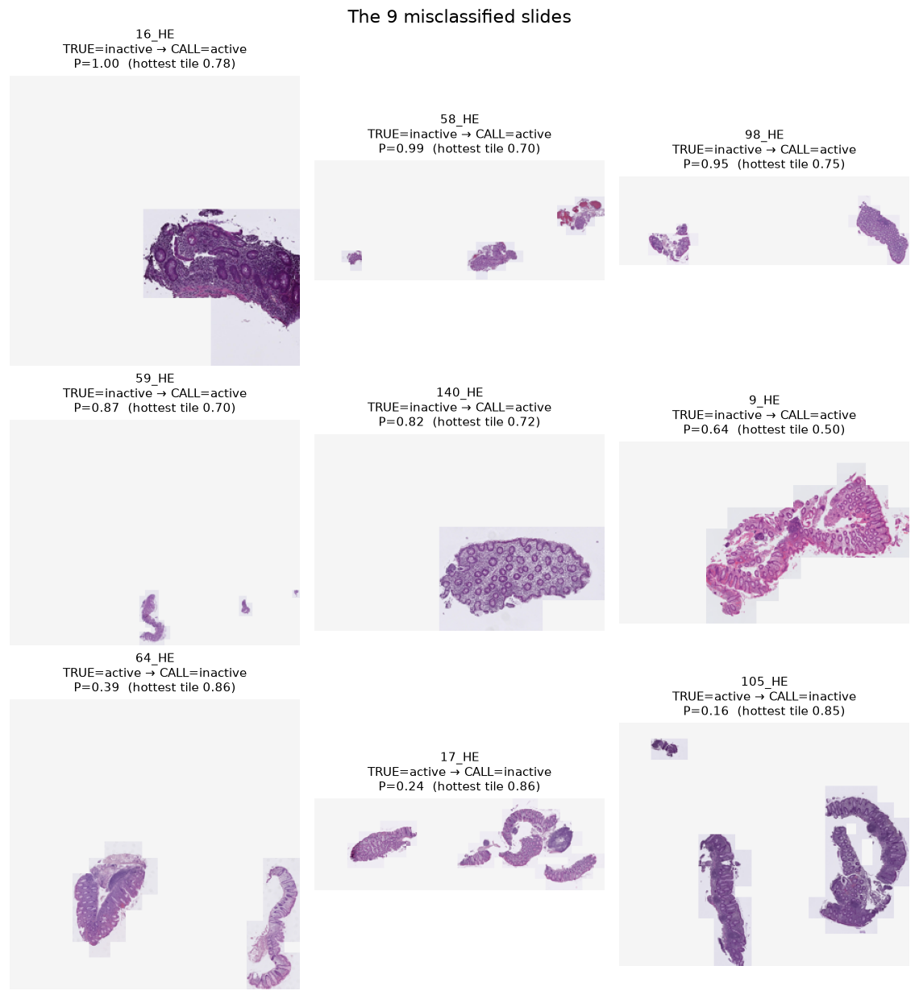
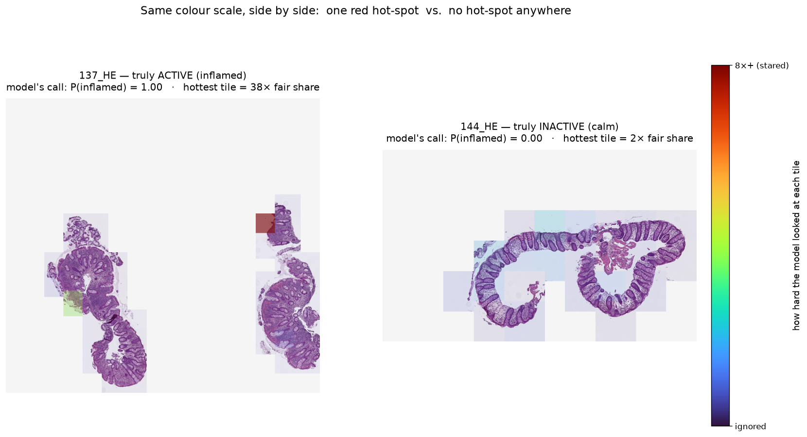
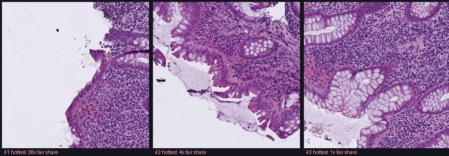
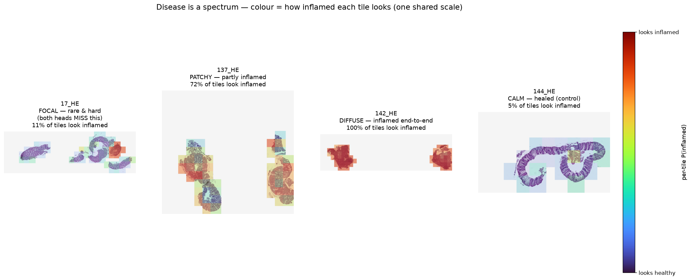

IBD H&E:
Inflamed vs Healed
A region map of active inflammation on colon biopsies —
built on a frozen pathology foundation model, one small step at a time.
Started 2026-06-28 · this deck grows as we go.
Turn a giant slide into an honest "inflamed vs healed" map
Goal: for each H&E biopsy slide, produce a heatmap of where disease is active vs healed — plus a validation number we can trust.
Why it's hard:
- 🐘 Slides are huge — one whole-slide image is 1–4 GB, billions of pixels. Can't feed it whole to any model.
- 🏷️ Labels are slide-level (the whole slide is tagged active or inactive) — we are not told which regions.
- 🎯 Disease is focal — even in an "active" slide, most tissue looks normal. So a slide's label is a noisy guess for any single region.
- 💧 Leaks easily — tiles from one slide aren't independent; validation must be grouped by slide/patient or the score is fake.
A conveyor belt — and we only own the small end
TRIDENT→ 🧠 Embed tiles
frozen foundation model→ 🎓 Light head
we train THIS→ 🗺️ Stitch heatmap
- The encoder is frozen. A model pretrained on millions of pathology images turns each tile into a list of numbers (an "embedding"). We never retrain it — the heavy lifting is done.
- We train only the small head that reads those numbers and scores inflamed vs healed.
- v1 = the smallest useful slice: embeddings → light head → heatmap → honest validation. Fancier scoring comes later, on the same embeddings.
Four moving parts — we build only two
✂️ TRIDENT off-the-shelf
One command: finds tissue → cuts 256px tiles at 20× → runs each through the encoder.
Output per slide: one .h5 of features + coords.
🧠 Frozen encoder off-the-shelf
A model pretrained on millions of tiles (H-optimus / H0-mini). Each tile → an embedding: a ~1.5k-number "fingerprint." Look-alikes land nearby — never taught IBD.
🎓 Our head we build
Reads each fingerprint → P(active) for that tile. Tiny — trains in seconds on
CPU. The encoder stays frozen.
🗺️ Heatmap we build
Colour each tile by P(active) (cool → red), overlaid on
the thumbnail → shows where disease is & lets a pathologist sanity-check it.
One feature separates the two classes
Active / inflamed = neutrophils (immune cells) invading the epithelium — cryptitis → crypt abscess → surface erosion.
Inactive / healed = orderly, quiet crypts. (Old scarring is allowed — only active inflammation counts.)
🌸 Pink = cytoplasm, connective tissue, secretions · 🟣 Purple dots = cell nuclei.
So a dense cloud of dark dots = a crowd of cells, and a crowd of immune cells = inflammation.

The calm reference
- Test-tubes-in-a-rack: crypts are long, parallel, evenly spaced.
- Crypt openings are clean empty rings (pale goblet cells = mucus).
- The tissue between crypts is quiet — few dark dots.

Crowded and messy
- The neat rack is gone — architecture is distorted.
- Spaces between crypts are stuffed with dark inflammatory nuclei.
- The surface (top edge) looks ragged / damaged.

Crypt abscess = a gland filled with pus
- A crypt cut across looks like a ring (a donut) — wall + hollow centre.
- Here the centre is packed with neutrophils (dark lumpy dots + pink debris) = an abscess.
- In a healthy crypt that centre would be an empty pale hole.
| Where the neutrophils are | Name |
|---|---|
| None in the lining | healthy / inactive |
| In the crypt wall | cryptitis |
| In the crypt centre | crypt abscess |

Cryptitis — the step before an abscess
- Neutrophils are squeezing into and between the epithelial cells of the crypt lining.
- The surface at the top is eroded / frayed.
- This is what "neutrophils invading the epithelium" looks like before pus collects.
Focal disease → we can't trust slide→tile labels
- An "active" slide is mostly calm tissue with a few guilty spots.
- So pasting the slide's label onto every tile mislabels most of them.
- 👉 Plan: use attention-MIL — train on the slide label, let the model find the guilty tiles itself, and read its attention as the heatmap.
- 👉 Always validate grouped by slide/patient — never a random tile split (it leaks).
Where we are & what's next
✓ Done
- Understood the target biology: active = neutrophils in epithelium.
- Looked at active vs healed H&E — textbook images and real dataset tiles.
- Environment ready — project
.venvwith the light core (numpy, pandas, scikit-learn, …). - Data downloaded & MD5-verified — the pre-tiled HE patch set (8.76 GB).
- Step 1 done — built
artifacts/patch_manifest.csv(6,322 tiles · 140 slides) + 16 tests. - Step 2 done — labels found & attached (54 active / 86 inactive) + 10 tests.
- Step 3 done — embedded all 6,322 tiles with frozen H-optimus-0 on the Mac GPU (MPS) → cached.
- Step 4 done — baseline: AUROC 0.98 (leave-patients-out), verified no leakage.
- Step 5 done — attention-MIL → a real per-tile heatmap (the where), AUROC 0.976. Honest catch: no better than baseline, and focal disease stays unsolved.
→ Next
- Step 6 — honest validation: consolidate leave-patients-out metrics (CI, sensitivity/specificity, confusion, head-vs-head agreement). ⬅️ next
- Then (deferred): cell/neutrophil detection, stain norm, Geboes / Nancy / Robarts scoring — all on the same frozen embeddings.
This logbook keeps growing — new slides get appended as we build each piece.
From one giant slide to a trustworthy map
Input: ONE giant slide (1–4 GB) + ONE word — active or inactive. Output: a red/blue map + an honest number. Here is the whole bridge between them:
+ one word→ ✂️ Tile
TRIDENT→ 🧠 Embed
frozen model→ 🎓 Score
we build→ 🗺️ Stitch
we build→ 📏 Validate
we build
| Stage | What happens | Tool / what we get |
|---|---|---|
| 1 · Tile | find tissue, cut ~1,000 tiles, remember each tile's position | TRIDENT |
| 2 · Embed | each tile → ~1,500 numbers (a "fingerprint") | frozen foundation model |
| 3 · Score | tiny head reads fingerprints → P(active) per tile | we build |
| 4 · Stitch | paint scores onto the thumbnail → red/blue map | we build |
| 5 · Validate | leave-slides-out test → AUROC + agreement | we build |
APPROACH.md.Three steps up — and we never hand-label tiles
🏷️ Slide label = one word per slide. The only label we ever need — it already exists (hidden in the WSI filename); we just look it up.
🚫 Tile label = which individual tiles are inflamed. We never make these by hand.
| Step | Uses | Gives | Hand-label tiles? |
|---|---|---|---|
| a · Mean-pool → logistic regression | slide labels only | "is the signal there?" (AUROC gate) | no |
| b · Attention-MIL (the deliverable) | slide labels only | the heatmap — model finds the tiles itself | no |
| c · QuPath polygons (optional, last) | a few you draw | a clean hand-checked yardstick | yes, optional |
140 colon-biopsy slides, pre-cut into 6,322 H&E tiles
IBDColEpi (NTNU / St. Olavs, Trondheim) — H&E biopsies of colonic mucosa from IBD patients + healthy controls. We downloaded the pre-tiled HE patch set (8.76 GB) — 512px tiles, not the full slides. Labels are slide-level active / inactive (the word lives in the WSI filename — Step 2 fetches it).
| Author's split | Tiles | Slides | Role |
|---|---|---|---|
| Trainset | 4,973 | 104 | training |
| Validationset | 154 | 80 (⊂ train) | random 3% of train tiles |
| Testset | 1,195 | 36 | held-out slides |
| Total (distinct) | 6,322 | 140 | 104 train + 36 test |
split as provenance but run our own leave-slides-out
validation, grouped by slide_id.
Where the label lives — and the 54 / 86 split
The patch files don't carry the label, but the dataset's annotation/WSI filenames do:
ID-{id}_HE_{active|inactive}.tiff. We read all 140 cheaply by fetching just the
central directory (table-of-contents) at the end of TIFF-annotations.zip —
a ~1 MB tail-read, not the 1.6 GB file — then cross-checked vs Owkin IMILIA
(132 slides, zero disagreements). Committed to metadata/slide_labels.csv.
| Class | Slides | Tiles |
|---|---|---|
| inactive (healed) | 86 | 3,503 |
| active (inflamed) | 54 | 2,819 |
| total | 140 slides · 139 patients | 6,322 |
Step 2 output: patch_manifest_labeled.csv — every tile now carries
label, slide_target (active=1), and patient_id.
slide_target = the SLIDE's label copied onto each tile — a bag label for
mean-pool / attention-MIL, not a per-tile truth (an active slide is
mostly calm tiles). We group by patient_id so the 116 re-biopsy can't leak.
H-optimus-0 — the frozen “brain” we build on
frozen ViT · 1.1B params→ 🔢 1,536-number vector
the tile's "fingerprint"
- What it is: a 1.1-billion-parameter Vision Transformer, pre-trained by Bioptimus on a huge pile of H&E slides self-supervised (no labels). It already "knows" what tissue, crypts, nuclei and inflammation look like — that knowledge is baked into its weights.
- How we use it: frozen. Each tile goes in, one 1,536-number embedding comes out — pure inference, no training. We never touch its weights. Compute once, cache forever (our 6,322 tiles took ~42 min on the Mac GPU).
- Why that's the whole bet: the expensive pre-training already did the hard visual learning, so we only train tiny heads (logistic regression, attention-MIL) on top. That's why this fits on a laptop.
- Swappable: H-optimus-0 (open, Apache-2.0) today;
H0-mini/UNI2/Virchow2drop into the same slot — we'd choose by a probe on held-out IBD slides, not oncology leaderboards.
Embeddings computed → the signal is real (AUROC 0.98)
- Step 3 — embeddings. Frozen H-optimus-0 (1.1B-param ViT) ran every tile through itself on the Mac GPU (MPS) → a 1,536-number vector per tile, L2-normalized, cached to
artifacts/embeddings/. 6,322 tiles, ~42 min, once. Encoder never trained. - Step 4 — baseline. Mean-pool each slide's embeddings → logistic regression, leave-patients-out: AUROC 0.984, κ 0.87, accuracy 94% (per-fold all ≥0.96).
This is whether a slide is active (slide-level). The where — the heatmap — is Step 5 (attention-MIL).
The baseline separates active vs healed — cleanly, and leak-free

Left: active (red) and inactive (green) form two clouds. Middle: predictions are bimodal — inactive pile at 0, active pile at 1 (not squeaking by). Right: AUROC 0.984. Shuffling labels collapses it to 0.52 → no leakage.
A small inflamed focus among normal tissue

17_HE (labeled active): per-tile P(active) heatmap + its hottest vs coolest tiles.One hot focus in mostly-normal mucosa. The hot tiles are
dense & disordered; the cool tiles are orderly crypt rings. The mean-pool baseline missed this
slide (averaged the focus away). Attention-MIL was meant to catch exactly this — but honestly it
doesn't yet: 17_HE stays missed by MIL too (see the “disease is a spectrum” slide). Genuinely focal disease is
the hard, open case.
Where the model disagrees with the pathologist (9 / 140)

3 active→called inactive = genuinely focal disease (the hard cases — attention-MIL doesn't fully
fix these either; see the spectrum slide). 6 inactive→called active = dense/chronic tissue or tiny biopsies,
where "abnormal" ≠ "neutrophils." A full clickable review of all 140 (thumbnail → per-tile zoom) lives at
artifacts/review/index.html.
Let the model find the guilty tiles
+ one slide label→ ⚖️ Attention aᵢ
weight per tile→ ➕ Weighted pool
z = Σ aᵢ·tileᵢ→ 🎓 Classify z
P(active)→ 🗺️ aᵢ = heatmap
- Each slide is a bag of its tile embeddings + one label — no per-tile labels.
- A tiny network learns an attention weight aᵢ for each tile (how much it counts; the weights sum to 1), pools the tiles into one slide vector by weighted average, then classifies it.
- Trained on slide labels only — but to call an active slide active it must put weight on the inflamed tiles. So the learned attention is the heatmap (the where), for free.
- vs the alternatives: mean-pool weights every tile equally (dilutes the focus — it missed
17_HE); max-pool uses only the single top tile (brittle — fooled by one benign dense tile). Attention is the learned middle.
132_HE test: max-pool would fixate on one dense-but-benign tile (lymphoid, muscle). Does gated attention avoid that trap? We check it on the next slide — validated leave-patients-out vs the 0.98 baseline.The heatmap is real — and it points at the inflammation

- The score does not improve — that's the honest result. Leave-patients-out AUROC 0.976, a hair below the baseline's 0.984 (96% agreement). MIL's entire value is the heatmap, not a better number.
- 137_HE (inflamed): attention concentrates on the most blatant region — 91% on 3 tiles, hottest 38× its fair share. ⚠️ Attention marks the model's evidence, not the disease's full extent (this slide is ~72% inflamed — see the spectrum slide).
- 144_HE (clean inactive): no tile stands out (hottest 2× fair share) → pale everywhere, P≈0. One hot-spot vs none is the call.
- The
132_HEtrap held: gated attention spread out (max 3× fair share) instead of fixating on the benign dense tile that fooled the naive linear localizer (0.81). Correctly P≈0. ✓
Zoom on the hottest tiles — what attention actually picked

#1 (38×): a dense inflammatory infiltrate at a denuded / eroded mucosal surface — the look of active disease. #2 (4×): crypts ringed by inflammation. #3 (1× = ignored): comparatively orderly crypts. Nobody told the model which tiles to read — trained on the slide label alone, it learned to put its weight exactly where the disease is.
Disease isn't all-or-nothing — and the focal end is where it's hardest

- Most active slides are broadly inflamed. Median active slide ≈ 82% inflamed tiles;
142_HEis 100% (diffuse). These are easy — both heads nail them. - Focal disease (
17_HE, ~11% inflamed) is rare and hard, and here's the honest catch: both the baseline and attention-MIL miss it. In fact MIL misses more active slides than the baseline (6 vs 3). It adds the map — it does not rescue the focal cases. - Two maps, two questions. Attention = where the model focused to decide (the attention-heatmap slide). Per-tile P = how inflamed each tile looks (here). For grading disease extent later (Nancy / Robarts), the extent map is the relevant one.
Where v1 landed — the honest one-slide recap
🧱 What we built
One frozen pathology model (H-optimus-0) → tile embeddings → two light heads. No encoder training. Steps 1–5: manifest → labels → embed → baseline → attention-MIL, each with tests.
📊 The numbers leave-patients-out
Baseline mean-pool: AUROC 0.984. Attention-MIL: 0.976 (no better). Always grouped by patient; shuffling labels → 0.52 → no leakage.
🗺️ The deliverable
A per-tile inflamed-vs-healed heatmap on the slide — the model's evidence localized, learned from slide labels only (zero per-tile annotation).
⚠️ What we did NOT solve
Focal disease (17_HE, 105_HE) is missed by both heads — MIL misses
more (6 vs 3). "Abnormal ≠ neutrophils" false positives remain; cell-level confirmation is deferred.
Data, model & tools
- Dataset — IBDColEpi (CC0, public domain): Pettersen et al. (2021), Code-Free Development and
Deployment of Deep Segmentation Models for Digital Pathology, Front. Med. 8:816281; data
doi:10.18710/TLA01U(DataverseNO). H&E subset + slide-level labels only. - Foundation model — H-optimus-0 (Bioptimus, 2024; Apache-2.0), used frozen via
timm. - Method — attention-MIL: Ilse, Tomczak & Welling (2018), Attention-based Deep Multiple Instance Learning, ICML. Related: CLAM (Lu et al., 2021).
- Libraries: PyTorch · timm · scikit-learn · NumPy · pandas · Matplotlib · Pillow. Reference impl (sanity-check): Owkin IMILIA. Recommended WSI tools (not used in v1): TRIDENT · OpenSlide · QuPath.
- Teaching H&E images (cryptitis / crypt-abscess): Wikimedia Commons, CC-BY-SA, by Nephron. All result figures use real IBDColEpi tiles.
REFERENCES.md in the repo.